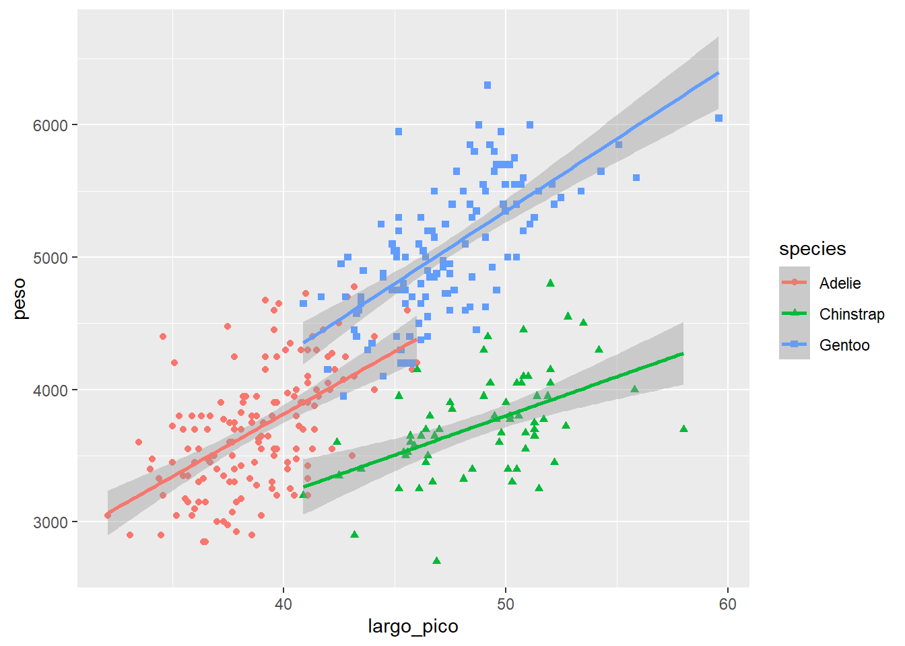

install.packages("palmerpenguins")
install.packages("tidyverse")¿Qué es?
Instalar paquetes
library(tidyverse)── Attaching core tidyverse packages ──────────────────────── tidyverse 2.0.0 ──
✔ dplyr 1.1.4 ✔ readr 2.1.5
✔ forcats 1.0.0 ✔ stringr 1.5.1
✔ ggplot2 3.5.1 ✔ tibble 3.2.1
✔ lubridate 1.9.3 ✔ tidyr 1.3.1
✔ purrr 1.0.2
── Conflicts ────────────────────────────────────────── tidyverse_conflicts() ──
✖ dplyr::filter() masks stats::filter()
✖ dplyr::lag() masks stats::lag()
ℹ Use the conflicted package (<http://conflicted.r-lib.org/>) to force all conflicts to become errorslibrary(palmerpenguins)Datos
Datos colectados en las Islas Palmer de 2007 - 2009 por Dr. Kristen Gorman
data(package = 'palmerpenguins')
head(penguins)# A tibble: 6 × 8
species island bill_length_mm bill_depth_mm flipper_length_mm body_mass_g
<fct> <fct> <dbl> <dbl> <int> <int>
1 Adelie Torgersen 39.1 18.7 181 3750
2 Adelie Torgersen 39.5 17.4 186 3800
3 Adelie Torgersen 40.3 18 195 3250
4 Adelie Torgersen NA NA NA NA
5 Adelie Torgersen 36.7 19.3 193 3450
6 Adelie Torgersen 39.3 20.6 190 3650
# ℹ 2 more variables: sex <fct>, year <int>df <- penguinsAlgunas funciones
Renombrar
df2 <- rename(df,
peso= "body_mass_g",
largo_pico = "bill_length_mm",
prof_pico = "bill_depth_mm"
)
names(df2)[1] "species" "island" "largo_pico"
[4] "prof_pico" "flipper_length_mm" "peso"
[7] "sex" "year" Seleccionar y filtrar datos
df_fil1 <- filter(df2, peso> 4000)
df2[df2$peso > 4000,]# A tibble: 174 × 8
species island largo_pico prof_pico flipper_length_mm peso sex year
<fct> <fct> <dbl> <dbl> <int> <int> <fct> <int>
1 <NA> <NA> NA NA NA NA <NA> NA
2 Adelie Torgersen 39.2 19.6 195 4675 male 2007
3 Adelie Torgersen 42 20.2 190 4250 <NA> 2007
4 Adelie Torgersen 34.6 21.1 198 4400 male 2007
5 Adelie Torgersen 42.5 20.7 197 4500 male 2007
6 Adelie Torgersen 46 21.5 194 4200 male 2007
7 Adelie Dream 39.2 21.1 196 4150 male 2007
8 Adelie Dream 39.8 19.1 184 4650 male 2007
9 Adelie Dream 44.1 19.7 196 4400 male 2007
10 Adelie Dream 39.6 18.8 190 4600 male 2007
# ℹ 164 more rowsmin(df_fil1$peso)[1] 4050df_fil2 <- filter(df2, peso>4000,
sex != "male",
largo_pico < 47,
species %in% c("Gentoo", "Adelie"))df2[df2$peso > 4000 & df2$species == c("Adelie","Gentoo"),]# A tibble: 64 × 8
species island largo_pico prof_pico flipper_length_mm peso sex year
<fct> <fct> <dbl> <dbl> <int> <int> <fct> <int>
1 Adelie Torgersen 34.6 21.1 198 4400 male 2007
2 Adelie Dream 39.2 18.6 190 4250 male 2009
3 Gentoo Biscoe 50 16.3 230 5700 male 2007
4 Gentoo Biscoe 50 15.2 218 5700 male 2007
5 Gentoo Biscoe 46.5 13.5 210 4550 female 2007
6 Gentoo Biscoe 46.7 15.3 219 5200 male 2007
7 Gentoo Biscoe 46.8 15.4 215 5150 male 2007
8 Gentoo Biscoe 49 16.1 216 5550 male 2007
9 Gentoo Biscoe 48.4 14.6 213 5850 male 2007
10 Gentoo Biscoe 49.3 15.7 217 5850 male 2007
# ℹ 54 more rowsSeleccionar columnas
df_sel <- dplyr::select(df_fil1, species, island)
dplyr::select(df_fil1, -species, -island)# A tibble: 172 × 6
largo_pico prof_pico flipper_length_mm peso sex year
<dbl> <dbl> <int> <int> <fct> <int>
1 39.2 19.6 195 4675 male 2007
2 42 20.2 190 4250 <NA> 2007
3 34.6 21.1 198 4400 male 2007
4 42.5 20.7 197 4500 male 2007
5 46 21.5 194 4200 male 2007
6 39.2 21.1 196 4150 male 2007
7 39.8 19.1 184 4650 male 2007
8 44.1 19.7 196 4400 male 2007
9 39.6 18.8 190 4600 male 2007
10 42.3 21.2 191 4150 male 2007
# ℹ 162 more rowsincluso permite reordenar y renombrar
dplyr::select(df_fil1,
isla=island,
aleta=flipper_length_mm,
species)# A tibble: 172 × 3
isla aleta species
<fct> <int> <fct>
1 Torgersen 195 Adelie
2 Torgersen 190 Adelie
3 Torgersen 198 Adelie
4 Torgersen 197 Adelie
5 Torgersen 194 Adelie
6 Dream 196 Adelie
7 Dream 184 Adelie
8 Dream 196 Adelie
9 Dream 190 Adelie
10 Dream 191 Adelie
# ℹ 162 more rowso seleccionar dependiendo de la clase
dplyr::select(df, where(is.factor))# A tibble: 344 × 3
species island sex
<fct> <fct> <fct>
1 Adelie Torgersen male
2 Adelie Torgersen female
3 Adelie Torgersen female
4 Adelie Torgersen <NA>
5 Adelie Torgersen female
6 Adelie Torgersen male
7 Adelie Torgersen female
8 Adelie Torgersen male
9 Adelie Torgersen <NA>
10 Adelie Torgersen <NA>
# ℹ 334 more rowsNuevas columnas y operaciones
df_mut <- mutate(df_fil1,
porportion= largo_pico/length(df_fil1$species))Conteos
count(df_mut, species)# A tibble: 3 × 2
species n
<fct> <int>
1 Adelie 35
2 Chinstrap 15
3 Gentoo 122count(df_mut, porportion)# A tibble: 102 × 2
porportion n
<dbl> <int>
1 0.201 1
2 0.204 1
3 0.218 1
4 0.220 1
5 0.228 3
6 0.230 2
7 0.231 1
8 0.231 1
9 0.233 1
10 0.234 1
# ℹ 92 more rowspero es más divertido agrupandola
df_group <- group_by(df_mut, island)
resum <- summarise(df_group,
total_peso= sum(peso),
promedio_peso= mean(peso),
sd_pespo= sd(peso))Uso de tuberías o pipes
df_pipe <- df %>%
rename(peso= "body_mass_g",
largo_pico = "bill_length_mm",
prof_pico = "bill_depth_mm"
) %>%
dplyr::select(-island) %>%
filter(peso>4000) %>%
mutate(relacion= largo_pico/prof_pico)Especificando ggplot
Grámatica para hacer gráficos. La filosifía de ggplot va en capas
1. Capa es para los datos y la estética de los datos
ggplot(data= df2,
aes(x=largo_pico, y=peso))Ahora la geometría de los datos que queremos
ggplot(data= df2,
aes(x=largo_pico, y=peso))+
geom_point()Warning: Removed 2 rows containing missing values or values outside the scale range
(`geom_point()`).
la geometria puede tener estéticas
ggplot(data= df2,
aes(x=largo_pico, y=peso))+
geom_point(aes(color=species, shape= species))Warning: Removed 2 rows containing missing values or values outside the scale range
(`geom_point()`).
Podemos tener varias geometrías
ggplot(data= df2,
aes(x=largo_pico, y=peso))+
geom_point(aes(color=species, shape= species))+
geom_smooth(aes(color= species),method = "lm", se= T)`geom_smooth()` using formula = 'y ~ x'Warning: Removed 2 rows containing non-finite outside the scale range
(`stat_smooth()`).Warning: Removed 2 rows containing missing values or values outside the scale range
(`geom_point()`).
ggplot(data= df2,
aes(x=largo_pico, y=peso))+
geom_smooth(method = "lm", se= T)+
geom_point()`geom_smooth()` using formula = 'y ~ x'Warning: Removed 2 rows containing non-finite outside the scale range
(`stat_smooth()`).Warning: Removed 2 rows containing missing values or values outside the scale range
(`geom_point()`).
Hay varios temas por defecto en ggplot que controlan las carácteristicas del gráfico
ggplot(data= df2,
aes(x=largo_pico, y=peso))+
geom_point(aes(color=species, shape= species))+
geom_smooth(aes(color= species),method = "lm", se= T)+
theme_void()`geom_smooth()` using formula = 'y ~ x'Warning: Removed 2 rows containing non-finite outside the scale range
(`stat_smooth()`).Warning: Removed 2 rows containing missing values or values outside the scale range
(`geom_point()`).probemos a hacer histogramas
ggplot(data = df2, aes(x=flipper_length_mm))+
geom_histogram()`stat_bin()` using `bins = 30`. Pick better value with `binwidth`.Warning: Removed 2 rows containing non-finite outside the scale range
(`stat_bin()`).
histograma por especie
ggplot(data = df2, aes(x=flipper_length_mm))+
geom_histogram(aes(fill= species), alpha= 0.5)`stat_bin()` using `bins = 30`. Pick better value with `binwidth`.Warning: Removed 2 rows containing non-finite outside the scale range
(`stat_bin()`).
Podemos controlar los colores
ggplot(data = df2, aes(x=flipper_length_mm))+
geom_histogram(aes(fill= species), alpha= 0.5)+
scale_fill_manual(values = c("#812C30","purple","black"))`stat_bin()` using `bins = 30`. Pick better value with `binwidth`.Warning: Removed 2 rows containing non-finite outside the scale range
(`stat_bin()`).Cambiar el tema
ggplot(data = df2, aes(x=flipper_length_mm))+
geom_histogram(aes(fill= species), alpha= 0.5)+
scale_fill_manual(values = c("darkorange","purple","cyan4"))+
theme_gray()`stat_bin()` using `bins = 30`. Pick better value with `binwidth`.Warning: Removed 2 rows containing non-finite outside the scale range
(`stat_bin()`).
Cambiar la leyenda
ggplot(data = df2, aes(x=flipper_length_mm))+
geom_histogram(aes(fill= species), alpha= 0.5)+
scale_fill_manual(name=" Especies", values = c("darkorange","purple","cyan4"))+
theme_minimal()+
labs(x= "Largo de la aleta (mm)",
y= " Frecuencia",
title = " Histograma de aletas")`stat_bin()` using `bins = 30`. Pick better value with `binwidth`.Warning: Removed 2 rows containing non-finite outside the scale range
(`stat_bin()`).
Por últim también podemos hacer marcos del mismo gráfico agrupado por determinada variable
ggplot(data = df2, aes(x=flipper_length_mm))+
geom_histogram(aes(fill= species), alpha= 0.5)+
scale_fill_manual(name=" Especies", values = c("darkorange","purple","cyan4"))+
theme_minimal()+
labs(x= "Largo de la aleta (mm)",
y= " Frecuencia",
title = " Histograma de aletas")+
facet_grid(~year)`stat_bin()` using `bins = 30`. Pick better value with `binwidth`.Warning: Removed 2 rows containing non-finite outside the scale range
(`stat_bin()`).